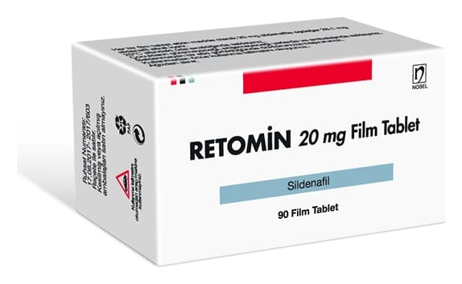

Retomin 20 mg Film Kaplı Tablet (90 Adet)

Ne için kullanılır
KT · Bölüm 1• RETOMİN film kaplı tabletler, 20 mg sildenafil’e eşdeğer 28,1 mg sildenafil sitrat içeren, yuvarlak, bombeli, tek tarafı çentikli beyaz film kaplı tabletlerdir. • Ç entiğin amacı tabletin ikiye bölünmesini sağlamaktır. 90 film kaplı tablet içeren ambalajlar halinde sunulmaktadır. • RETOMİN’in içindeki etkin madde sildenafildir. Sildenafil “fosfodiesteraz tip 5 inhibitörleri (PDE5)” adlı ilaçlar grubuna dahildir. • RETOMİN akciğerlerdeki kan damarlarını genişleterek akciğer damar yatağındaki kan basıncını (pulmoner hipertansiyonu) düşürür. • RETOMİN, yetişkinlerde ve 1 ila 17 yaş arası çocuk ve ergenlerde, pulmoner arteriyel hipertansiyonun (akciğerlerdeki kan damarlarında yüksek kan basıncı) tedavisinde kullanılır.